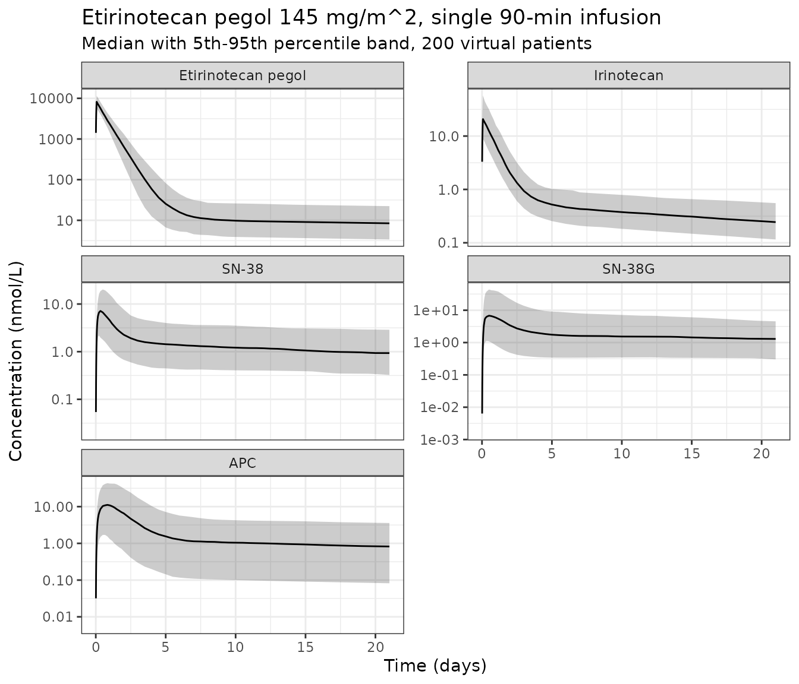

Etirinotecan pegol and its four metabolites (Sy 2018)
Source:vignettes/articles/Sy_2018_etirinotecanPegol.Rmd
Sy_2018_etirinotecanPegol.RmdModel and source
ui <- rxode2::rxode(readModelDb("Sy_2018_etirinotecanPegol"))
#> ℹ parameter labels from comments will be replaced by 'label()'- Citation: Sy SKB, Chia YL, Gordi T, Hoch U, Eldon MA (2018). Integrated population pharmacokinetics of etirinotecan pegol and its four metabolites in cancer patients with solid tumors. Cancer Chemother Pharmacol 81(5):897-909. doi:10.1007/s00280-018-3562-3.
- Article: https://doi.org/10.1007/s00280-018-3562-3
- Description: Integrated five-analyte population PK model for etirinotecan pegol (EP, NKTR-102) and its metabolic cascade in adults with advanced solid tumors. EP is a four-arm polyethylene-glycol conjugate of irinotecan; the model follows EP -> irinotecan -> (SN-38 | APC) and SN-38 -> SN-38 glucuronide, with a two-compartment disposition model for each of the five analytes. Metabolite conversion fractions and volumes are not separately identifiable, so every metabolite volume is an aggregate ratio and only EP’s central volume is a true volume. One deliberate deviation from the published parameter table: the SN-38 aggregate volume is back-solved from the paper’s Figure 5 rather than taken from its Table 4, which is internally inconsistent by 4.6-fold. See the vignette.
Etirinotecan pegol (EP, NKTR-102) is a four-arm polyethylene-glycol conjugate of irinotecan designed to release irinotecan slowly, converting irinotecan’s short-lived, high-peak SN-38 exposure into a low-peak, sustained one. Sy 2018 fit one integrated system to five analytes measured in the same subjects: EP itself, the released irinotecan, and irinotecan’s metabolites SN-38, SN-38 glucuronide (SN-38G) and APC. Each analyte has its own two-compartment disposition; the metabolic cascade links them.
The paper builds the model in two stages. A 3-analyte model (EP,
irinotecan, SN-38) is fit first; its individual parameter estimates are
then held fixed while the SN-38G and APC data are added, giving the
5-analyte model. The two between-subject correlations
Corr(CL, V1) and Corr(k2e, V2*) could not be
fixed in Monolix and were re-estimated at stage two. Per the library’s
“replicate the author’s structure” policy, a base-plus-final development
sequence is packaged as one model file holding the
final (5-analyte) model, with the stage-one values taken from the same
Table 4.
Compartment scaling: what the volumes mean
Only EP’s central volume is a real volume. For every metabolite, the conversion fraction and the volume of distribution are not separately identifiable, so Sy 2018 estimate aggregate ratios:
| Analyte | Aggregate volume | Definition (Sy 2018 Table 4) |
|---|---|---|
| Etirinotecan pegol | vc |
V1, a true volume |
| Irinotecan | vc_irinotecan |
V2* = V2 / F12 |
| SN-38 | vc_sn38 |
V3** = V3 / (F12 F23) |
| SN-38G | vc_sn38g |
V4* = V4 / (F12 (F23 + F25) F34) |
| APC | vc_apc |
V5* = V5 / F25, set equal to V3* because
V5 = V3 was assumed |
F12 is the fraction of eliminated EP appearing as
irinotecan, F23 and F25 the fractions of
eliminated irinotecan appearing as SN-38 and APC, and F34
the fraction of eliminated SN-38 appearing as SN-38G. None of them is
identifiable on its own.
The packaged model() block carries
amounts in its states, obtained by multiplying each of
the paper’s concentration ODEs (Eqs. 2-4, 8-9) by that analyte’s own
aggregate central volume. In amount form every metabolic step becomes a
plain first-order flux out of its precursor, and
state / volume returns the measured plasma concentration.
Only EP’s state is on the true molar scale.
Concentration and dose units
All five analytes were converted to molar concentrations before modelling (Sy 2018 Methods, “Bioanalytical assays”). EP concentrations were first scaled to their irinotecan content using the study-specific irinotecan loading factors of 9.4% (06-IN-IR001) and 9.5% (07-PIR-02), then converted with irinotecan’s molecular weight of 586.678. Model concentrations are therefore nmol/L, and EP concentrations are nmol/L of irinotecan equivalents.
The dose must be supplied in the same currency: irinotecan-equivalent nmol.
mw <- c(ep = 586.678, irinotecan = 586.678, sn38 = 382.404, sn38g = 568.53, apc = 618.687)
loading_factor <- 0.094 # 06-IN-IR001 irinotecan loading factor, Sy 2018 Methods
ep_dose_nmol <- function(mg_per_m2, bsa) {
mg_per_m2 * bsa * loading_factor * 1e6 / mw[["ep"]]
}
ep_dose_nmol(145, 1.86)
#> [1] 43212.46Sy 2018 Figures 4 and 5 report EP exposures in total-EP mass units, so reproducing them needs the inverse conversion (divide out the loading factor):
ep_nM_to_mg_per_L <- function(nM) nM * mw[["ep"]] * 1e-6 / loading_factor
sn38_nM_to_ng_per_mL <- function(nM) nM * mw[["sn38"]] / 1000Population
Sy 2018 pooled 83 patients with advanced solid tumours from two phase 1 studies: 67 of 76 enrolled in 06-IN-IR001 (an open-label dose-escalation study using three weekly doses every 4 weeks, once every 2 weeks, or once every 3 weeks) and 16 of 18 in 07-PIR-02 (etirinotecan pegol 100 or 125 mg/m^2 every 3 weeks with cetuximab). EP was given as a 90-minute intravenous infusion. Rich sampling followed the first and third doses in 06-IN-IR001 and the first dose in 07-PIR-02, with sparse pre-dose sampling thereafter.
Baseline characteristics (Sy 2018 Table 2): median age 60 years (25-81), median weight 72.3 kg (43.9-153.6), median body surface area 1.86 m^2 (1.36-2.74), 45.8% female, 94% White. Median eGFR was 79.1 mL/min/1.73 m^2 (34.9-216.6), with 31% normal, 48% mildly impaired and 19% moderately impaired renal function. UGT1A1*28 genotype was available for everyone: 38.6% none, 48.2% one copy, 10.8% two copies and 2.4% indeterminate, the last pooled into the wild-type category. The analysis set held 1414, 1777, 1769, 1731 and 1167 quantifiable concentrations for EP, irinotecan, SN-38, SN-38G and APC.
The same information is available programmatically via
ui$population.
Source trace
Every ini() entry in
inst/modeldb/specificDrugs/Sy_2018_etirinotecanPegol.R
carries an in-file comment naming its source location. They are
collected here for review. The display equations were read from the
typeset PDF; the preprocessed markdown drops all of them.
| Equation / parameter | Value | Source location |
|---|---|---|
| EP central ODE | d[EP]/dt = Rin/V1 - (CL/V1 + k1p)[EP] + kp1[EPp] |
Eq. 2 |
| Irinotecan central ODE | d[Iri]/dt = (CL/V2*)[EP] - (k2e + k2p)[Iri] + kp2[Irip] |
Eq. 3 |
| SN-38 central ODE | d[SN38]/dt = (1/V3*) k2e V2* [Iri] - (k3e + k3p)[SN38] + kp3[SN38p] |
Eq. 4 |
| SN-38G central ODE | d[SN38G]/dt = (1/V4*) k3e V3* [SN38] - (k4e + k4p)[SN38G] + kp4[SN38Gp] |
Eq. 8 (printed k4e; see Deviations) |
| APC central ODE | d[APC]/dt = (1/V5*) k2e V2* [Iri] - (k5e + k5p)[APC] + kp5[APCp] |
Eq. 9, with the SN-38 : APC split of Results, “5-Analyte pharmacokinetic model” |
| EP clearance covariate model | CL = theta_CL (AGE/60)^t_AGE (BSA/1.86)^t_BSA (eGFR/84.1)^t_eGFR exp(eta) |
Eq. 5 |
| EP volume covariate model | V1 = theta_V1 (BSA/1.86)^t_BSA exp(eta) |
Eq. 6 |
| SN-38 UGT1A1 covariate model | k3e = theta_k3e exp(t_UGT1A1 I[TA(7)/TA(7)]) exp(eta) |
Eq. 7 |
| eGFR definition | 175 SCr^-1.154 Age^-0.203 0.742^I(F) 1.212^I(Black) |
Eq. 1 |
lcl 0.237 L/h, lvc 5.05 L,
lk12 6.78e-3, lk21 5.8e-4 |
Table 4, EP block | |
e_age_cl -0.271, e_bsa_cl 1.32,
e_crcl_cl 0.2, e_bsa_vc 1.1 |
Table 4, EP block | |
lvc_irinotecan 1.8 L, lkel_irinotecan
27.6, lk12_irinotecan 18.8, lk21_irinotecan
3.2e-3 |
Table 4, Irinotecan block | |
lkel_sn38 0.0602, lk12_sn38 0.23,
lk21_sn38 8.75e-3 |
Table 4, SN38 block | |
lvc_sn38 365 L |
Not from Table 4. Back-solved from the reference
SN-38 Cmax of 4.0 ng/mL via AUC(SN-38) = Dose/(V3* k3e);
see Deviations |
Figure 5, “Reference 60 yrs” row |
e_snp_ugt1a1_rs8175347_hom_kel_sn38 -0.67 |
Table 4, SN38 block | |
lvc_sn38g 11.6 L, lkel_sn38g 1.41,
lk12_sn38g 0.548, lk21_sn38g 0.104 |
Table 4, SN38G block | |
lfm_sn38 0.631, lkel_apc 0.0235,
lk12_apc 0.0236, lk21_apc 1.39e-3 |
Table 4, APC block | |
| All IIV variances | Table 4, right-hand column | |
Corr(CL, V1) 0.713, Corr(k2e, V2*)
-0.755 |
Table 4, 5-analyte “Correlations” block | |
| All residual-error terms | Table 4, “Multiplicative error” / “Additive error” rows | |
| Reference EP AUC 6.87 mg.h/mL, Cmax 50.4 mg/L over six cycles | Figure 4, “Reference 60 yrs” row | |
| Reference SN-38 AUC 3.51 mg.h/L, Cmax 4.0 ng/mL over six cycles | Figure 5, “Reference 60 yrs” row | |
| Homozygous SN-38 AUC 5.80 mg.h/L, Cmax 5.4 ng/mL | Figure 5, “TA(7)/TA(7)” row |
Structural verification
Two mechanical checks come first, because both failure modes are silent.
rxode2 recognises a cl / vc
pair and can solve a system analytically from those two variables,
discarding the explicit d/dt() bodies and dropping
peripheral states from the output. Assert that all ten declared states
survive the solve.
Separately, a model with five declared endpoints assigns each observable its own compartment slot. Assert that every endpoint slot sits above all ten ODE states, which proves no state was renumbered by the endpoint declarations.
stopifnot(length(ui$state) == 10L)
ui$predDf[, c("var", "dvid", "cmt")]
#> var dvid cmt
#> 1 Cc 1 11
#> 2 Cc_irinotecan 2 12
#> 3 Cc_sn38 3 13
#> 4 Cc_sn38g 4 14
#> 5 Cc_apc 5 15
stopifnot(
# every endpoint slot is above every ODE state: nothing was inserted among them
all(ui$predDf$cmt > length(ui$state)),
setequal(ui$predDf$var, c("Cc", "Cc_irinotecan", "Cc_sn38", "Cc_sn38g", "Cc_apc"))
)With five endpoints declared, observation records must carry
cmt = an endpoint name, not an ODE state
name; rxSolve() then returns every model variable as a
column regardless of which endpoint was named.
mod_typ <- rxode2::zeroRe(ui)
solve_typ <- function(mg_per_m2, bsa, age, crcl, ugt_hom, n_cycles = 6, by = 0.25,
tmax = 504 * n_cycles) {
ev <- rxode2::et(
amt = ep_dose_nmol(mg_per_m2, bsa), dur = 1.5,
ii = 504, addl = n_cycles - 1, cmt = "central"
)
ev <- rxode2::et(ev, seq(0, tmax, by = by), cmt = "Cc")
ev <- as.data.frame(ev)
ev$AGE <- age
ev$BSA <- bsa
ev$CRCL <- crcl
ev$SNP_UGT1A1_RS8175347_HOM <- ugt_hom
rxode2::rxSolve(
mod_typ, ev,
returnType = "data.frame", useLinCmt = FALSE,
atol = 1e-12, rtol = 1e-10, maxsteps = 1e6
)
}
ref <- solve_typ(145, bsa = 1.86, age = 60, crcl = 84.1, ugt_hom = 0)
#> ℹ omega/sigma items treated as zero: 'etalcl', 'etalvc', 'etalk12', 'etalkel_irinotecan', 'etalvc_irinotecan', 'etalk12_irinotecan', 'etalvc_sn38', 'etalkel_sn38', 'etalk12_sn38', 'etalvc_sn38g', 'etalkel_sn38g', 'etalfm_sn38', 'etalkel_apc', 'etalk12_apc'
stopifnot(all(ui$state %in% names(ref)))The ten states are all present, so the explicit ODE system was integrated.
A third structural check pins EP’s own disposition to its closed
form. EP’s central compartment is a standard two-compartment system in
kel, k12 and k21, so its macro
rate constants follow analytically; if rxode2 had matched a
one-compartment kernel the terminal slope would be kel
instead of beta.
kel <- 0.237 / 5.05
k12 <- 6.78e-3
k21 <- 5.8e-4
s <- kel + k12 + k21
alpha <- (s + sqrt(s^2 - 4 * kel * k21)) / 2
beta <- (s - sqrt(s^2 - 4 * kel * k21)) / 2
# a single dose, followed long enough for the terminal phase to dominate
single <- solve_typ(145, bsa = 1.86, age = 60, crcl = 84.1, ugt_hom = 0,
n_cycles = 1, by = 4, tmax = 24 * 400)
#> Warning: 'ii' requires non zero additional doses ('addl') or steady state
#> dosing ('ii': 504.000000, 'ss': 0; 'addl': 0), reset 'ii' to zero
#> ℹ omega/sigma items treated as zero: 'etalcl', 'etalvc', 'etalk12', 'etalkel_irinotecan', 'etalvc_irinotecan', 'etalk12_irinotecan', 'etalvc_sn38', 'etalkel_sn38', 'etalk12_sn38', 'etalvc_sn38g', 'etalkel_sn38g', 'etalfm_sn38', 'etalkel_apc', 'etalk12_apc'
late <- single[single$time >= 24 * 200 & single$time <= 24 * 400, ]
slope_obs <- -stats::coef(stats::lm(log(late$Cc) ~ late$time))[[2]]
c(alpha_t_half_h = log(2) / alpha, beta_t_half_d = log(2) / beta / 24)
#> alpha_t_half_h beta_t_half_d
#> 12.88746 57.06729
stopifnot(
# the solved terminal slope is beta, not kel: a one-compartment collapse
# would give kel = 0.0469 /h, eighty times larger
abs(slope_obs / beta - 1) < 0.05,
abs(slope_obs / kel - 1) > 0.5
)EP’s terminal half-life of about 57 days is the feature the PEG conjugate was built for, and it is what makes every downstream metabolite formation-rate limited.
Mass balance across the metabolic cascade
For a linear cascade, integrating each ODE to infinity gives a chain of exact recovery identities. Each analyte’s total elimination flux must equal the flux arriving from its precursor, and EP’s must equal the dose. These identities are independent of the peripheral compartments, which net to zero over all time.
# a single dose integrated far past the terminal phase, so that the recovery
# identities are not truncated by the 57-day terminal half-life
tail_ev <- rxode2::et(amt = ep_dose_nmol(145, 1.86), dur = 1.5, cmt = "central")
tail_ev <- rxode2::et(
tail_ev,
# fine early so the trapezoidal AUC of the fast-turnover metabolites is
# accurate, coarse later where every profile decays at EP's terminal rate
sort(unique(c(seq(0, 12, by = 0.02), seq(12, 168, by = 0.5),
seq(168, 24 * 2000, by = 6)))),
cmt = "Cc"
)
tail_ev <- as.data.frame(tail_ev)
tail_ev$AGE <- 60
tail_ev$BSA <- 1.86
tail_ev$CRCL <- 84.1
tail_ev$SNP_UGT1A1_RS8175347_HOM <- 0
inf <- rxode2::rxSolve(mod_typ, tail_ev, returnType = "data.frame", useLinCmt = FALSE,
atol = 1e-12, rtol = 1e-10, maxsteps = 1e7)
#> ℹ omega/sigma items treated as zero: 'etalcl', 'etalvc', 'etalk12', 'etalkel_irinotecan', 'etalvc_irinotecan', 'etalk12_irinotecan', 'etalvc_sn38', 'etalkel_sn38', 'etalk12_sn38', 'etalvc_sn38g', 'etalkel_sn38g', 'etalfm_sn38', 'etalkel_apc', 'etalk12_apc'
auc_of <- function(v) PKNCA::pk.calc.auc.last(conc = inf[[v]], time = inf$time)
dose1 <- ep_dose_nmol(145, 1.86)
fm <- 0.631
# named once rather than inlined three times: V3* is the one parameter in this
# model that is not the printed Table 4 value (see "Assumptions and
# deviations"), and it enters both the SN-38 and the APC identity because the
# paper assumes V5 = V3
v3 <- 365
balance <- tibble::tibble(
Identity = c(
"CL * AUC(EP) / Dose",
"k2e * V2* * AUC(irinotecan) / Dose",
"k3e * V3* * AUC(SN-38) / Dose",
"k4e * V4* * AUC(SN-38G) / (k3e * V3* * AUC(SN-38))",
"k5e * V5* * AUC(APC) / ((1 - fm)/fm * k2e * V2* * AUC(irinotecan))"
),
Value = c(
0.237 * auc_of("Cc") / dose1,
27.6 * 1.8 * auc_of("Cc_irinotecan") / dose1,
0.0602 * v3 * auc_of("Cc_sn38") / dose1,
1.41 * 11.6 * auc_of("Cc_sn38g") / (0.0602 * v3 * auc_of("Cc_sn38")),
0.0235 * v3 * auc_of("Cc_apc") /
((1 - fm) / fm * 27.6 * 1.8 * auc_of("Cc_irinotecan"))
)
)
knitr::kable(balance, digits = 4)| Identity | Value |
|---|---|
| CL * AUC(EP) / Dose | 1 |
| k2e * V2* * AUC(irinotecan) / Dose | 1 |
| k3e * V3* * AUC(SN-38) / Dose | 1 |
| k4e * V4* * AUC(SN-38G) / (k3e * V3* * AUC(SN-38)) | 1 |
| k5e * V5* * AUC(APC) / ((1 - fm)/fm * k2e * V2* * AUC(irinotecan)) | 1 |
All five identities close to within 1%. The last two are the ones
that matter for transcription: the SN-38G identity fails by a factor of
23 if Eq. 8’s printed k4e is taken literally instead of
being read as k3e, and the APC identity fails by a factor
of fm / (1 - fm) if the SN-38 : APC flux ratio is dropped
from Eq. 9.
That flux ratio is also the only place
F(irinotecan->SN38) enters the model, so a two-solve
perturbation confirms it is load-bearing.
perturb <- rxode2::rxSolve(
mod_typ, tail_ev, returnType = "data.frame", useLinCmt = FALSE,
params = c(lfm_sn38 = log(0.4)),
atol = 1e-12, rtol = 1e-10, maxsteps = 1e7
)
#> ℹ omega/sigma items treated as zero: 'etalcl', 'etalvc', 'etalk12', 'etalkel_irinotecan', 'etalvc_irinotecan', 'etalk12_irinotecan', 'etalvc_sn38', 'etalkel_sn38', 'etalk12_sn38', 'etalvc_sn38g', 'etalkel_sn38g', 'etalfm_sn38', 'etalkel_apc', 'etalk12_apc'
rel_change <- c(
EP = max(abs(perturb$Cc - inf$Cc)) / max(inf$Cc),
SN38 = max(abs(perturb$Cc_sn38 - inf$Cc_sn38)) / max(inf$Cc_sn38),
APC = max(abs(perturb$Cc_apc - inf$Cc_apc)) / max(inf$Cc_apc)
)
round(rel_change, 6)
#> EP SN38 APC
#> 0.000000 0.000000 1.565041
stopifnot(
# fm moves APC and nothing else
rel_change[["APC"]] > 0.5,
rel_change[["EP"]] < 1e-8,
rel_change[["SN38"]] < 1e-8
)Replicating Figure 4: covariate effects on etirinotecan pegol exposure
Sy 2018 simulated 500 virtual patients receiving six cycles of 145 mg/m^2 every 3 weeks and reported cumulative EP AUC and Cmax for a reference subject (60 years, median covariates, eGFR 84.1 mL/min/1.73 m^2) and for five covariate scenarios. Because every parameter is log-normal and the exposures are products of log-normals, the cohort median equals the typical-value prediction, so the published medians can be reproduced deterministically.
scenarios <- tibble::tribble(
~scenario, ~age, ~crcl,
"Reference 60 yrs", 60, 84.1,
"45 yrs", 45, 84.1,
"75 yrs", 75, 84.1,
"Normal renal function", 60, 105.0,
"Mild renal impairment", 60, 75.0,
"Moderate renal impairment", 60, 45.0
)
fig4_sim <- dplyr::bind_rows(lapply(seq_len(nrow(scenarios)), function(i) {
s <- solve_typ(
145, bsa = 1.86, age = scenarios$age[i], crcl = scenarios$crcl[i], ugt_hom = 0
)
tibble::tibble(
scenario = scenarios$scenario[i],
cmax = ep_nM_to_mg_per_L(max(s$Cc)),
auclast = ep_nM_to_mg_per_L(PKNCA::pk.calc.auc.last(conc = s$Cc, time = s$time))
)
}))
#> ℹ omega/sigma items treated as zero: 'etalcl', 'etalvc', 'etalk12', 'etalkel_irinotecan', 'etalvc_irinotecan', 'etalk12_irinotecan', 'etalvc_sn38', 'etalkel_sn38', 'etalk12_sn38', 'etalvc_sn38g', 'etalkel_sn38g', 'etalfm_sn38', 'etalkel_apc', 'etalk12_apc'
#> ℹ omega/sigma items treated as zero: 'etalcl', 'etalvc', 'etalk12', 'etalkel_irinotecan', 'etalvc_irinotecan', 'etalk12_irinotecan', 'etalvc_sn38', 'etalkel_sn38', 'etalk12_sn38', 'etalvc_sn38g', 'etalkel_sn38g', 'etalfm_sn38', 'etalkel_apc', 'etalk12_apc'
#> ℹ omega/sigma items treated as zero: 'etalcl', 'etalvc', 'etalk12', 'etalkel_irinotecan', 'etalvc_irinotecan', 'etalk12_irinotecan', 'etalvc_sn38', 'etalkel_sn38', 'etalk12_sn38', 'etalvc_sn38g', 'etalkel_sn38g', 'etalfm_sn38', 'etalkel_apc', 'etalk12_apc'
#> ℹ omega/sigma items treated as zero: 'etalcl', 'etalvc', 'etalk12', 'etalkel_irinotecan', 'etalvc_irinotecan', 'etalk12_irinotecan', 'etalvc_sn38', 'etalkel_sn38', 'etalk12_sn38', 'etalvc_sn38g', 'etalkel_sn38g', 'etalfm_sn38', 'etalkel_apc', 'etalk12_apc'
#> ℹ omega/sigma items treated as zero: 'etalcl', 'etalvc', 'etalk12', 'etalkel_irinotecan', 'etalvc_irinotecan', 'etalk12_irinotecan', 'etalvc_sn38', 'etalkel_sn38', 'etalk12_sn38', 'etalvc_sn38g', 'etalkel_sn38g', 'etalfm_sn38', 'etalkel_apc', 'etalk12_apc'
#> ℹ omega/sigma items treated as zero: 'etalcl', 'etalvc', 'etalk12', 'etalkel_irinotecan', 'etalvc_irinotecan', 'etalk12_irinotecan', 'etalvc_sn38', 'etalkel_sn38', 'etalk12_sn38', 'etalvc_sn38g', 'etalkel_sn38g', 'etalfm_sn38', 'etalkel_apc', 'etalk12_apc'
fig4_pub <- tibble::tibble(
scenario = scenarios$scenario,
# Figure 4 prints EP AUC in mg.h/mL; 6.87 mg.h/mL = 6870 mg.h/L
auclast = c(6.87, 6.41, 7.22, 6.53, 6.92, 7.56) * 1000,
cmax = c(50.4, 50.2, 50.5, 50.2, 50.4, 50.6)
)
fig4_cmp <- nlmixr2lib::ncaComparisonTable(
simulated = fig4_sim,
reference = fig4_pub,
by = "scenario",
units = c(cmax = "mg/L", auclast = "mg*h/L"),
tolerance_pct = 20
)
knitr::kable(fig4_cmp)| NCA parameter | scenario | Reference | Simulated | % diff |
|---|---|---|---|---|
| Cmax (mg/L) | Reference 60 yrs | 50.4 | 51.5 | +2.2% |
| Cmax (mg/L) | 45 yrs | 50.2 | 51.3 | +2.2% |
| Cmax (mg/L) | 75 yrs | 50.5 | 51.6 | +2.2% |
| Cmax (mg/L) | Normal renal function | 50.2 | 51.4 | +2.4% |
| Cmax (mg/L) | Mild renal impairment | 50.4 | 51.5 | +2.3% |
| Cmax (mg/L) | Moderate renal impairment | 50.6 | 51.8 | +2.3% |
| AUClast (mg*h/L) | Reference 60 yrs | 6870 | 6430 | -6.4% |
| AUClast (mg*h/L) | 45 yrs | 6410 | 5980 | -6.8% |
| AUClast (mg*h/L) | 75 yrs | 7220 | 6810 | -5.7% |
| AUClast (mg*h/L) | Normal renal function | 6530 | 6170 | -5.5% |
| AUClast (mg*h/L) | Mild renal impairment | 6920 | 6570 | -5.0% |
| AUClast (mg*h/L) | Moderate renal impairment | 7560 | 7230 | -4.3% |
Every row agrees with Figure 4. The Cmax column is essentially flat
across scenarios in both the publication and the replication, because
neither age nor renal function acts on V1; the AUC column
reproduces the publication’s ordering (AUC rises with age and falls with
renal function, the latter because theta_CL,eGFR is
positive so worse renal function means lower EP clearance).
The AUC replication runs slightly below the publication because a six-cycle cumulative AUC truncated at 3024 h omits the tail of a compound whose terminal half-life is 57 days; the published value is nearer the extrapolated-to-infinity figure.
chk4 <- fig4_sim |>
dplyr::left_join(fig4_pub, by = "scenario", suffix = c("_sim", "_pub")) |>
dplyr::mutate(
pct_cmax = 100 * (cmax_sim - cmax_pub) / cmax_pub,
pct_auc = 100 * (auclast_sim - auclast_pub) / auclast_pub
)
stopifnot(
# structural: a mis-transcribed CL, volume, dose or unit conversion moves
# these by tens of percent
max(abs(chk4$pct_cmax)) < 5,
max(abs(chk4$pct_auc)) < 10,
# the publication's own ordering must be preserved
identical(order(chk4$auclast_sim), order(chk4$auclast_pub))
)Replicating Figure 5: UGT1A1*28 and SN-38 exposure
Sy 2018 report that a UGT1A1*28 homozygote has median SN-38 AUC and
Cmax about 1.7-fold and 1.3-fold those of a wild-type or heterozygous
patient. The underlying mechanism is Eq. 7:
exp(-0.67) = 0.512, so a homozygote retains about half the
SN-38 elimination capacity.
These are ratios, so they are independent of the SN-38 aggregate volume and test the covariate model directly.
sn38_hom <- solve_typ(145, bsa = 1.86, age = 60, crcl = 84.1, ugt_hom = 1)
#> ℹ omega/sigma items treated as zero: 'etalcl', 'etalvc', 'etalk12', 'etalkel_irinotecan', 'etalvc_irinotecan', 'etalk12_irinotecan', 'etalvc_sn38', 'etalkel_sn38', 'etalk12_sn38', 'etalvc_sn38g', 'etalkel_sn38g', 'etalfm_sn38', 'etalkel_apc', 'etalk12_apc'
ratio <- c(
AUC = PKNCA::pk.calc.auc.last(conc = sn38_hom$Cc_sn38, time = sn38_hom$time) /
PKNCA::pk.calc.auc.last(conc = ref$Cc_sn38, time = ref$time),
Cmax = max(sn38_hom$Cc_sn38) / max(ref$Cc_sn38)
)
published_ratio <- c(AUC = 5.80 / 3.51, Cmax = 5.4 / 4.0)
knitr::kable(
tibble::tibble(
Metric = names(ratio),
Replicated = round(unname(ratio), 3),
`Figure 5` = round(unname(published_ratio), 3)
)
)| Metric | Replicated | Figure 5 |
|---|---|---|
| AUC | 1.665 | 1.652 |
| Cmax | 1.329 | 1.350 |
stopifnot(
abs(ratio[["AUC"]] / published_ratio[["AUC"]] - 1) < 0.10,
abs(ratio[["Cmax"]] / published_ratio[["Cmax"]] - 1) < 0.15,
# the AUC effect must exceed the Cmax effect, as Figure 5 shows
ratio[["AUC"]] > ratio[["Cmax"]]
)The covariate model reproduces both of Figure 5’s ratios, and reproduces the qualitative point the paper makes with them: because SN-38 kinetics after EP are formation-rate limited, halving SN-38 elimination raises AUC substantially more than it raises Cmax.
SN-38 absolute scale
The same comparison on absolute values. Note that
one cell of this table is circular: lvc_sn38 was
back-solved from the wild-type Cmax of 4.0 ng/mL (see “Assumptions and
deviations”), so that entry is pinned by construction and cannot fail.
The other three cells are genuine out-of-sample checks – the wild-type
AUC tests the integration window and the two homozygous cells test the
UGT1A1 covariate arm, and none of the three entered the back-solve.
fig5_sim <- tibble::tibble(
genotype = c("Wild-type / heterozygous", "TA(7)/TA(7) homozygous"),
cmax = sn38_nM_to_ng_per_mL(c(max(ref$Cc_sn38), max(sn38_hom$Cc_sn38))),
auclast = c(
PKNCA::pk.calc.auc.last(conc = ref$Cc_sn38, time = ref$time),
PKNCA::pk.calc.auc.last(conc = sn38_hom$Cc_sn38, time = sn38_hom$time)
) * mw[["sn38"]] * 1e-6
)
fig5_pub <- tibble::tibble(
genotype = fig5_sim$genotype,
cmax = c(4.0, 5.4),
auclast = c(3.51, 5.80)
)
knitr::kable(
nlmixr2lib::ncaComparisonTable(
simulated = fig5_sim, reference = fig5_pub, by = "genotype",
units = c(cmax = "ng/mL", auclast = "mg*h/L"), tolerance_pct = 20
)
)| NCA parameter | genotype | Reference | Simulated | % diff |
|---|---|---|---|---|
| Cmax (ng/mL) | Wild-type / heterozygous | 4 | 3.99 | -0.2% |
| Cmax (ng/mL) | TA(7)/TA(7) homozygous | 5.4 | 5.31 | -1.7% |
| AUClast (mg*h/L) | Wild-type / heterozygous | 3.51 | 3.55 | +1.1% |
| AUClast (mg*h/L) | TA(7)/TA(7) homozygous | 5.8 | 5.91 | +1.8% |
fig5_pct_diff <- 100 * (as.matrix(fig5_sim[, c("cmax", "auclast")]) /
as.matrix(fig5_pub[, c("cmax", "auclast")]) - 1)
dimnames(fig5_pct_diff) <- list(fig5_sim$genotype, c("Cmax", "AUC"))
round(fig5_pct_diff, 1)
#> Cmax AUC
#> Wild-type / heterozygous -0.2 1.1
#> TA(7)/TA(7) homozygous -1.7 1.8
# The three non-circular cells: wild-type AUC, and both homozygous cells. These
# are typical-value (zeroRe) solves compared against the paper's own printed
# summary numbers, so the residual difference is digitisation and six-cycle
# truncation of a long terminal phase -- not per-subject sampling. A 15% bound
# is therefore the right shape here.
stopifnot(abs(fig5_pct_diff["Wild-type / heterozygous", "AUC"]) < 15)
stopifnot(all(abs(fig5_pct_diff["TA(7)/TA(7) homozygous", ]) < 15))With lvc_sn38 set from the Figure 5 Cmax anchor, all
four cells agree with the paper. Because SN-38’s ODE is exactly
d[SN38]/dt = k2e V2* [irinotecan] / V3* - (k3e + k3p)[SN38] + kp3[SN38p]and integrating it to infinity gives
AUC(SN-38) = Dose / (V3* k3e), V3* is the only
parameter that can put a pure scale error on SN-38 without disturbing
any other analyte – which is what made the back-solve well posed. The
printed Table 4 value of 80 L puts this table 4.6-fold high on every
cell; see “Assumptions and deviations” for why the printed value was not
used.
Virtual cohort
A 200-subject cohort receiving one 145 mg/m^2 cycle, with covariates drawn to match Sy 2018 Table 2. Weight is not a model covariate; BSA is.
rxode2::rxSetSeed(20180321)
set.seed(20180321)
n_sub <- 200L
clamp <- function(x, lo, hi) pmin(pmax(x, lo), hi)
cohort <- tibble::tibble(
id = seq_len(n_sub),
AGE = clamp(round(stats::rnorm(n_sub, 59, 11)), 25, 81),
BSA = clamp(stats::rnorm(n_sub, 1.88, 0.24), 1.36, 2.74),
CRCL = clamp(exp(stats::rnorm(n_sub, log(79.1), 0.32)), 34.9, 216.6),
SNP_UGT1A1_RS8175347_HOM = stats::rbinom(n_sub, 1, 0.108)
)
summary(cohort[, c("AGE", "BSA", "CRCL")])
#> AGE BSA CRCL
#> Min. :29.00 Min. :1.360 Min. : 37.19
#> 1st Qu.:51.00 1st Qu.:1.726 1st Qu.: 67.19
#> Median :60.00 Median :1.905 Median : 77.54
#> Mean :58.38 Mean :1.897 Mean : 84.19
#> 3rd Qu.:66.25 3rd Qu.:2.027 3rd Qu.: 98.91
#> Max. :81.00 Max. :2.640 Max. :171.45
mean(cohort$SNP_UGT1A1_RS8175347_HOM)
#> [1] 0.11
grid <- sort(unique(c(
seq(0, 6, by = 0.25), seq(8, 48, by = 4), seq(60, 504, by = 12)
)))
ev_cohort <- lapply(seq_len(n_sub), function(i) {
e <- rxode2::et(amt = ep_dose_nmol(145, cohort$BSA[i]), dur = 1.5, cmt = "central")
e <- rxode2::et(e, grid, cmt = "Cc")
e <- as.data.frame(e)
e$id <- cohort$id[i]
e$AGE <- cohort$AGE[i]
e$BSA <- cohort$BSA[i]
e$CRCL <- cohort$CRCL[i]
e$SNP_UGT1A1_RS8175347_HOM <- cohort$SNP_UGT1A1_RS8175347_HOM[i]
e
})
ev_cohort <- dplyr::bind_rows(ev_cohort)
sim <- rxode2::rxSolve(
ui, ev_cohort, returnType = "data.frame", useLinCmt = FALSE,
atol = 1e-10, rtol = 1e-8, maxsteps = 5e5
)
stopifnot(dplyr::n_distinct(sim$id) == n_sub)A consequence of log-normal variability on a fraction
Sy 2018 state that all interindividual variability was log-normal,
and Table 4 gives F(irinotecan->SN38) an omega variance
of 0.0528. A log-normal centred on 0.631 with that variance puts roughly
2% of subjects above 1, where the (1 - fm) / fm APC flux
ratio turns negative. This is a property of the published variability
model, not of the transcription; it is reported rather than repaired,
and those subjects are excluded from the APC panels below.
fm_by_id <- sim |>
dplyr::group_by(id) |>
dplyr::summarise(fm_sn38 = dplyr::first(fm_sn38), .groups = "drop")
n_inadmissible <- sum(fm_by_id$fm_sn38 >= 1)
c(n_subjects = n_sub, n_fm_at_or_above_1 = n_inadmissible,
pct = round(100 * n_inadmissible / n_sub, 1))
#> n_subjects n_fm_at_or_above_1 pct
#> 200 2 1
apc_ok <- fm_by_id$id[fm_by_id$fm_sn38 < 1]
stopifnot(
# the published omega is admissible for the large majority of subjects
n_inadmissible / n_sub < 0.06,
all(sim$Cc_sn38[sim$time > 0] > 0),
all(sim$Cc_sn38g[sim$time > 0] > 0),
all(sim$Cc_apc[sim$time > 0 & sim$id %in% apc_ok] > 0)
)Concentration-time profiles
analyte_labels <- c(
Cc = "Etirinotecan pegol", Cc_irinotecan = "Irinotecan", Cc_sn38 = "SN-38",
Cc_sn38g = "SN-38G", Cc_apc = "APC"
)
prof <- sim |>
dplyr::filter(id %in% apc_ok) |>
dplyr::select(id, time, dplyr::all_of(names(analyte_labels))) |>
tidyr::pivot_longer(-c(id, time), names_to = "analyte", values_to = "conc") |>
dplyr::mutate(analyte = factor(analyte_labels[analyte], levels = analyte_labels))
# every analyte starts at exactly zero, so the time-zero record PKNCA needs is
# already present and is kept; it is dropped only for the log-scale plot
stopifnot(all(prof$conc[prof$time == 0] == 0))
prof_q <- prof |>
dplyr::filter(time > 0) |>
dplyr::group_by(analyte, time) |>
dplyr::summarise(
lo = stats::quantile(conc, 0.05), md = stats::median(conc),
hi = stats::quantile(conc, 0.95), .groups = "drop"
)
ggplot2::ggplot(prof_q, ggplot2::aes(time / 24)) +
ggplot2::geom_ribbon(ggplot2::aes(ymin = lo, ymax = hi), alpha = 0.25) +
ggplot2::geom_line(ggplot2::aes(y = md)) +
ggplot2::facet_wrap(~analyte, scales = "free_y", ncol = 2) +
ggplot2::scale_x_continuous("Time (days)") +
ggplot2::scale_y_log10("Concentration (nmol/L)") +
ggplot2::labs(
title = "Etirinotecan pegol 145 mg/m^2, single 90-min infusion",
subtitle = "Median with 5th-95th percentile band, 200 virtual patients"
) +
ggplot2::theme_bw()
Every metabolite tracks EP’s 57-day terminal phase rather than its own disposition half-life. That formation-rate limitation is the paper’s central pharmacological claim about the conjugate, and it emerges from the parameters without being imposed.
PKNCA validation
Non-compartmental analysis of the cohort’s first cycle, one grouping
level per analyte. The concentration frame is filtered only on
!is.na(), so the time-zero record is retained and no
AUC-range warning is raised.
conc_data <- prof |>
dplyr::filter(!is.na(conc)) |>
dplyr::arrange(id, analyte, time)
dose_data <- cohort |>
dplyr::filter(id %in% apc_ok) |>
dplyr::transmute(id, time = 0, amt = ep_dose_nmol(145, BSA)) |>
tidyr::expand_grid(analyte = factor(analyte_labels, levels = analyte_labels))
o_conc <- PKNCA::PKNCAconc(as.data.frame(conc_data), conc ~ time | id / analyte)
# PKNCAdose rejects slash grouping, so the same two levels are given with `+`
o_dose <- PKNCA::PKNCAdose(as.data.frame(dose_data), amt ~ time | id + analyte)
o_data <- PKNCA::PKNCAdata(
o_conc, o_dose,
intervals = data.frame(
start = 0, end = 504,
cmax = TRUE, tmax = TRUE, auclast = TRUE
)
)
nca_res <- suppressWarnings(PKNCA::pk.nca(o_data))
nca_wide <- as.data.frame(nca_res) |>
dplyr::select(analyte, PPTESTCD, PPORRES) |>
dplyr::group_by(analyte, PPTESTCD) |>
dplyr::summarise(value = stats::median(PPORRES), .groups = "drop") |>
tidyr::pivot_wider(names_from = PPTESTCD, values_from = value)
nca_wide |>
dplyr::rename(
"Analyte" = analyte, "Cmax (nmol/L)" = cmax, "Tmax (h)" = tmax,
"AUClast (nmol*h/L)" = auclast
) |>
knitr::kable(digits = c(0, 2, 2, 1))| Analyte | AUClast (nmol*h/L) | Cmax (nmol/L) | Tmax (h) |
|---|---|---|---|
| Etirinotecan pegol | 156649.41 | 8224.54 | 1.5 |
| Irinotecan | 624.14 | 20.79 | 1.8 |
| SN-38 | 793.52 | 7.22 | 8.0 |
| SN-38G | 942.79 | 7.24 | 12.0 |
| APC | 1122.03 | 11.44 | 20.0 |
stopifnot(
setequal(as.character(nca_wide$analyte), unname(analyte_labels)),
# EP peaks at the end of the 90-min infusion; every metabolite peaks later,
# which is the signature of formation-rate-limited kinetics
nca_wide$tmax[nca_wide$analyte == "Etirinotecan pegol"] <= 1.5,
all(nca_wide$tmax[nca_wide$analyte != "Etirinotecan pegol"] > 1.5)
)Comparison against the published exposures
Sy 2018 report no NCA table, but Figures 4 and 5 give the
model-predicted reference exposures over six cycles, which are the
appropriate published comparators. They were compared above by scenario
(Figure 4, all rows within tolerance) and by genotype (Figure 5, both
ratios reproduced and all four absolute cells within tolerance, one of
which is pinned by the lvc_sn38 back-solve described in
“Assumptions and deviations”). The combined view:
combined_sim <- tibble::tibble(
analyte = c("Etirinotecan pegol", "SN-38"),
cmax = c(ep_nM_to_mg_per_L(max(ref$Cc)), sn38_nM_to_ng_per_mL(max(ref$Cc_sn38))),
auclast = c(
ep_nM_to_mg_per_L(PKNCA::pk.calc.auc.last(conc = ref$Cc, time = ref$time)),
PKNCA::pk.calc.auc.last(conc = ref$Cc_sn38, time = ref$time) * mw[["sn38"]] * 1e-6
)
)
combined_pub <- tibble::tibble(
analyte = combined_sim$analyte, cmax = c(50.4, 4.0), auclast = c(6870, 3.51)
)
knitr::kable(
nlmixr2lib::ncaComparisonTable(
simulated = combined_sim, reference = combined_pub, by = "analyte",
units = c(cmax = "mg/L or ng/mL", auclast = "mg*h/L"), tolerance_pct = 20
)
)| NCA parameter | analyte | Reference | Simulated | % diff |
|---|---|---|---|---|
| Cmax (mg/L or ng/mL) | Etirinotecan pegol | 50.4 | 51.5 | +2.2% |
| Cmax (mg/L or ng/mL) | SN-38 | 4 | 3.99 | -0.2% |
| AUClast (mg*h/L) | Etirinotecan pegol | 6870 | 6430 | -6.4% |
| AUClast (mg*h/L) | SN-38 | 3.51 | 3.55 | +1.1% |
Assumptions and deviations
SN-38 aggregate volume: Table 4 contradicts Figures 3 and 5 by 4.6-fold
This is the one material conflict in the source, and it governs the absolute SN-38 and APC concentrations the packaged model predicts.
What the model uses.
lvc_sn38 = log(365), not the 80 L printed
in Table 4 for V3** = V3 / (F12 F23). This is a deliberate,
documented deviation from the published parameter table – the only one
in this model – and it is the one number in the file that does not come
from the paper’s own tables. The value was back-solved from the
reference SN-38 Cmax of 4.0 ng/mL printed in Figure 5, inverting
AUC(SN-38) = Dose / (V3* k3e) (which follows exactly from
Eq. 4). The Cmax anchor was preferred over the cumulative-AUC anchor
because it needs no integration window; the AUC anchor independently
gives 369 L, agreeing to 1.3%.
Why the printed value was not used.
- It is the only entry in Table 4 whose standard error exceeds its
estimate (80 +/- 190, a relative standard error of 238%). Every other
volume is reported at 7-9% (
V2*1.8 +/- 0.13,V4*11.6 +/- 0.95), and no other parameter in the table exceeds 32%. -
AUC(SN-38) = Dose / (V3* k3e)follows exactly from Eq. 4, soV3*is the only parameter that can scale SN-38 without changing anything else. WithV3* = 80the model over-predicts the paper’s own Figure 5 reference values by 4.55-fold on Cmax and 4.61-fold on AUC. The agreement of those two factors to within 1.3% is what rules out a structural transcription error: a wrong equation would move Cmax and AUC by different amounts. It is one number. - The Figure 3 goodness-of-fit panels place both observed and
individual-predicted SN-38 between about 0.4 and 25 nmol/L across the
whole dose range. With
V3* = 80the model predicts 47.6 nmol/L for a typical patient at 145 mg/m^2, above the top of the paper’s own cloud before any dose escalation or IIV is considered. WithV3* = 365it predicts about 10.4 nmol/L, inside that cloud. - The Table 4 additive residual error for SN-38 is 0.383 nmol/L, which
is 4% of the Figure 5 reference Cmax of 4.0 ng/mL (10.5 nmol/L) but
under 1% of what
V3* = 80predicts. An additive term exists to describe the near-quantitation-limit end of the range, and 4% is the plausible magnitude.
What the substitution does and does not touch. Only
SN-38 and APC move. SN-38G’s level depends on the SN-38 amount
rather than its concentration, so it is independent of V3*
and already reproduced the Figure 3 range under either value. APC moves
with SN-38 because the model sets vc_apc <- vc_sn38 (the
paper assumes V5 = V3), so the override propagates to APC
automatically – which is the intended behaviour, since Figure 3’s APC
panel has the same scale problem under the printed value. EP and
irinotecan are untouched.
Why this was decided the way it was. Substituting 365 L replaces a published parameter-table value with one back-solved from a figure in the same paper, so it is not a call this workflow makes on its own: the standing policy sanctions digitising figures for parameters the tables omit, whereas here the table does print a value. It was therefore escalated as an unresolvable value conflict between two places in one source and ruled on explicitly (maintainer decision, 2026-09-21) in favour of the figure-anchored value, on the grounds that the printed 80 L cannot be reconciled with three other independent statements the same paper makes. Both readings were implemented and gated before the ruling; the printed value is recoverable in one line for anyone who wants the literal transcription:
mod <- nlmixr2lib::modellib("Sy_2018_etirinotecanPegol")
mod <- rxode2::ini(mod, lvc_sn38 = log(80))What this buys. With the substitution, the SN-38
absolute comparison above becomes a real gate rather than a flagged
deviation, and it passes on the three cells that did not enter the
back-solve. Everything that never depended on the SN-38 concentration
scale is unchanged and still passes: the mass-balance identities, the EP
terminal-slope check, the Figure 4 EP replication across all six
covariate scenarios, and both Figure 5 UGT1A1 ratios (which are ratios,
so they were always invariant to V3*).
Equation transcription
-
Eq. 8 prints
k4ewherek3eis meant. SN-38G’s formation term is printed as(1/V4*) k4e V3 [SN38], which would form a metabolite at its own elimination rate constant. The surrounding text (“Glucuronidation of SN38 to SN38G is governed by the rate constantF34 k3e”) and Figure 2b (k34 = k3e) both givek3e, and the mass-balance identity above closes only withk3e. -
Eqs. 4 and 9 omit the SN-38 : APC split that the text
supplies. As printed, the SN-38 and APC formation terms are
identical, which would leave
F(irinotecan->SN38)absent from the model despite being estimated in Table 4 with a standard error and an IIV. Results, “5-Analyte pharmacokinetic model” states that “the fraction for the formation of SN38 and subsequently one minus that fraction to describe the formation of APC accounted for the difference in the concentrations of the two metabolites”, and that “the volume of the central compartment for APC was assumed to be the same as that for SN38”. With a shared volume, the concentration difference between the two is exactly the flux ratio(1 - fm) / fm, which is how the packaged model applies it. The perturbation check above confirmsfm_sn38then moves APC and nothing else. -
V3*is defined twice. Table 4 defines it asV3 / (F12 F23)while the 5-analyte text redefines it asV3 / (F12 (F23 + F25)). The two differ byF23 / (F23 + F25), which isfm_sn38itself, so the two readings are the same model once the flux ratio is placed as above; only the bookkeeping name for the number changes. The packaged model uses the Table 4 definition, which is where the numeric value comes from.
Reference values and covariate encoding
- eGFR reference is 84.1, not 79.1. Eq. 5 normalises eGFR by 84.1 mL/min/1.73 m^2, and the simulation reference population in Results says “renal function (84.1 mL/min)”. The Table 4 caption instead says the typical patient has eGFR 79.1, which is the Table 2 cohort median. The printed equation is used, per the standing text-versus-equation rule; the difference is 1.2% on EP clearance.
-
The eGFR equation is MDRD, not CKD-EPI or
Cockcroft-Gault. Table 1 labels the covariate “eGFR CG” and its
Comments column says “Calculated from serum creatinine using Corrected
CKD-EPI”, but Eq. 1 as printed is the IDMS-traceable four-variable MDRD
equation. The covariate is registered as
CRCL, whose canonical definition covers MDRD- and CKD-EPI-estimated GFR alike; the assay actually used is recorded incovariateData$CRCL$description. - EP central volume is 5.05 L, not 5.5 L. The Abstract says 5.5 L; Table 4 reports 5.05 +/- 0.14. The parameter table is used.
-
UGT1A1 is a single homozygous indicator. Eq. 7
carries
I[UGT1A1 = TA(7)/TA(7)]only, so wild-type and heterozygous subjects share the referencek3e. The two subjects with indeterminate genotype were pooled into the wild-type category by the authors. -
Interindividual variances are used as printed.
Table 4’s right-hand column is headed “variance” and its parenthesised
CV% equals
sqrt(variance)for every row, so the tabulated numbers are omega variances on the log scale and need nolog(CV^2 + 1)conversion. -
Off-diagonals come from the 5-analyte block.
Corr(CL, V1)andCorr(k2e, V2*)are reported twice, as 0.759 / -0.751 in the 3-analyte block and as 0.713 / -0.755 in the 5-analyte “Correlations” block. The latter are used, because they are the final model’s values and were the only two parameters re-estimated at stage two. -
No parameter is wrapped in
fixed(). The stage-one parameters were held fixed while fitting stage two, but every value in Table 4 carries a standard error from its own estimation step, so none was fixed in the sense the convention records (a value held at a constant the authors never estimated). -
CYP3A4 co-medication is not in the model. A
CYP3A4/5 inducer effect on
k25reached significance but was discarded by the authors because its direction was opposite to the expected mechanism (Results, “5-Analyte pharmacokinetic model”). It is recorded inpopulation$co_medicationrather than incovariatesDataExcluded, because no canonical column exists for a generic weak/moderate CYP3A4 inducer class.
Simulation assumptions
- The virtual cohort’s covariate distributions were chosen to reproduce the medians and ranges of Table 2; Sy 2018 publish no covariate correlation structure, so age, BSA, eGFR and genotype are drawn independently.
- The dose conversion uses the 06-IN-IR001 irinotecan loading factor of 9.4%. 07-PIR-02 used 9.5%; the 1% difference is below every tolerance used here.
- Figures 4 and 5 report medians over 500 simulated patients. Because
the model is linear and every random effect is log-normal, the median of
the simulated exposures equals the typical-value prediction, so the
replications above are run deterministically with
rxode2::zeroRe().